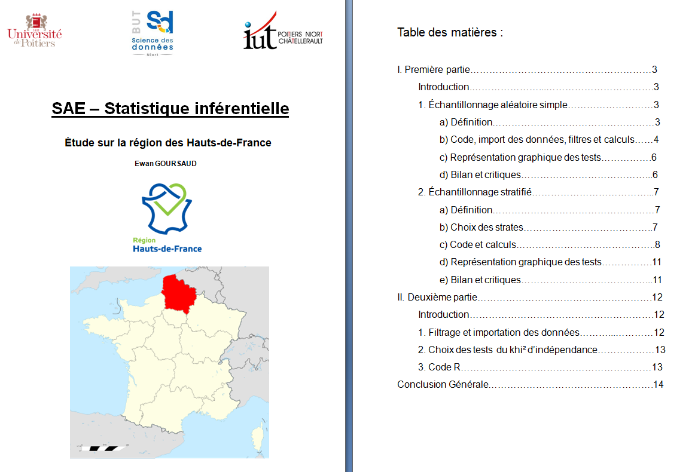
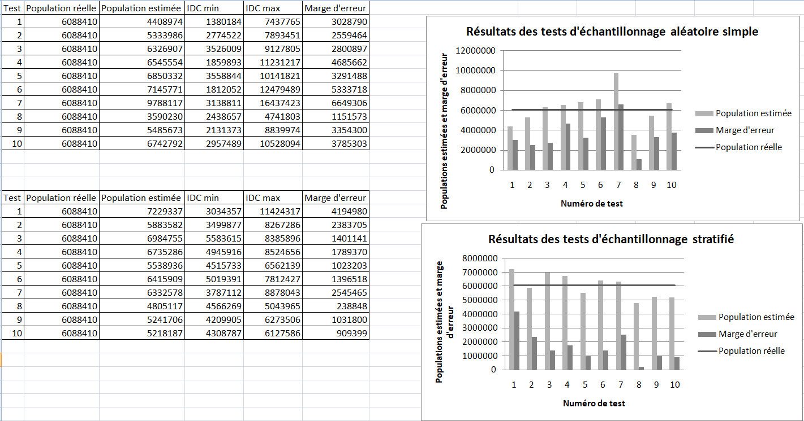
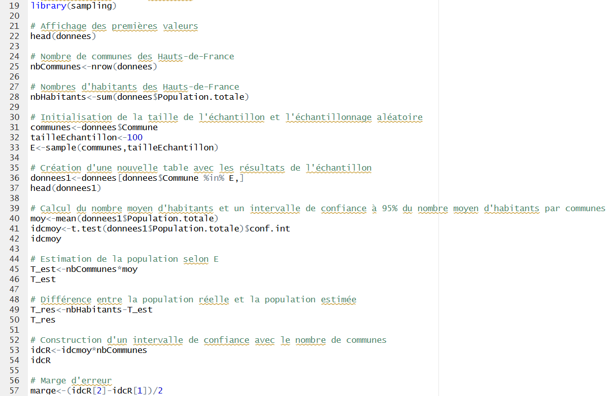
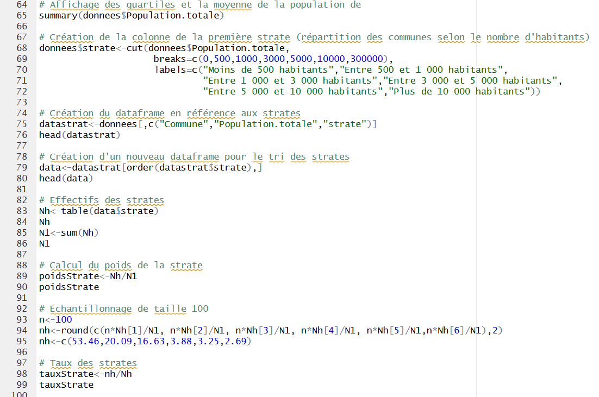
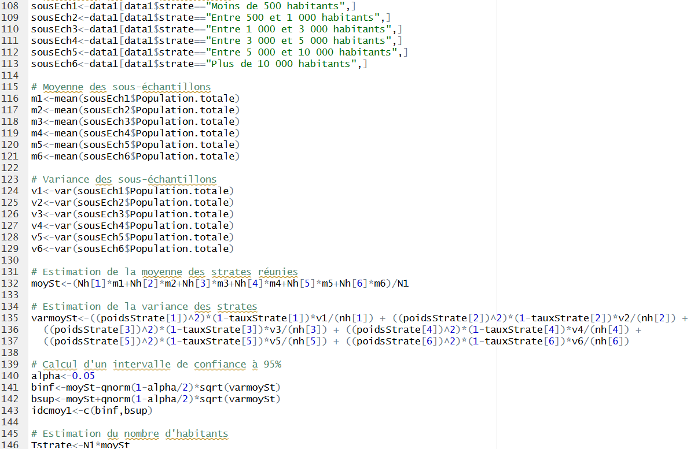
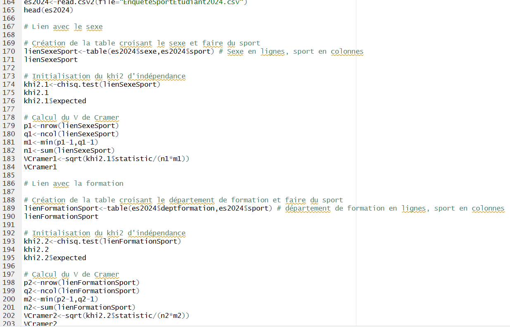

Pour cette SAÉ, le travail était divisé en deux parties. La première consistait à estimer la population d'une région française en ne prenant qu'un échantillon de communes, la seconde avait pour but de réaliser des tests d'indépendance.
Dans la première partie, l'objectif était de tester deux méthodes d'échantillonnage : l'échantillonnage aléatoire simple et l'échantillonnage aléatoire stratifié. J'ai travaillé sur la région des Hauts-de-France. Il s'agissait de réaliser un code R permettant de tirer 100 communes au hasard avec leur nombre d'habitants, afin d'en estimer la population totale. Les tests ont montré que la méthode stratifiée est plus précise que l'aléatoire simple, sans pour autant être parfaite. Les résultats ont été enregistrés dans un fichier Excel avec un graphique par méthode.
Dans la deuxième partie, indépendante de la première, le but était de réaliser des tests d'indépendance entre le fait d'être sportif et d'autres modalités parmi les étudiants de l'université de Poitiers en 2024. Ce test se fait grâce au khi-deux d'indépendance : plus le résultat est proche de 0, plus les modalités sont dépendantes ; plus il est proche de 1, plus elles sont indépendantes. Le V de Cramer a également été calculé pour mesurer le niveau de dépendance entre deux modalités. Ces calculs ont été réalisés en R.
Les attendus étaient un code R contenant les deux parties ainsi qu'un rapport sur l'ensemble du travail.